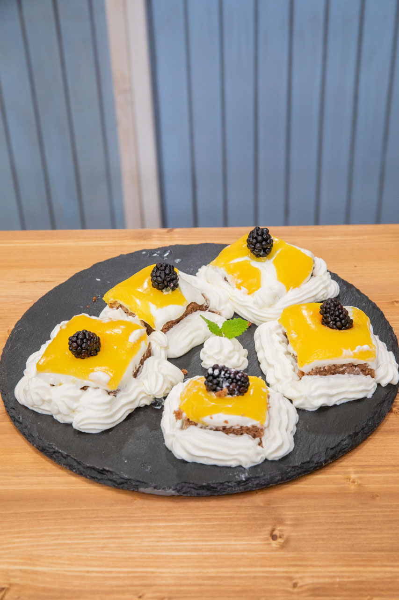
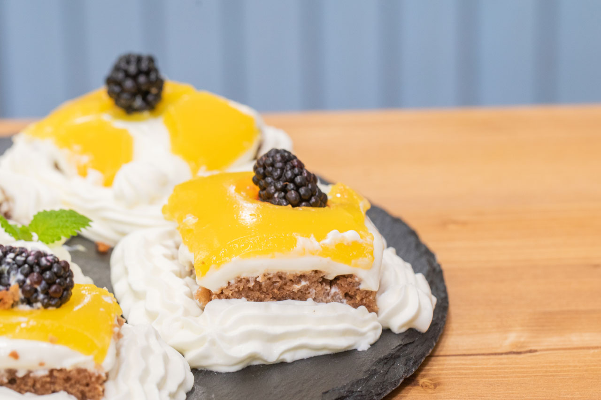
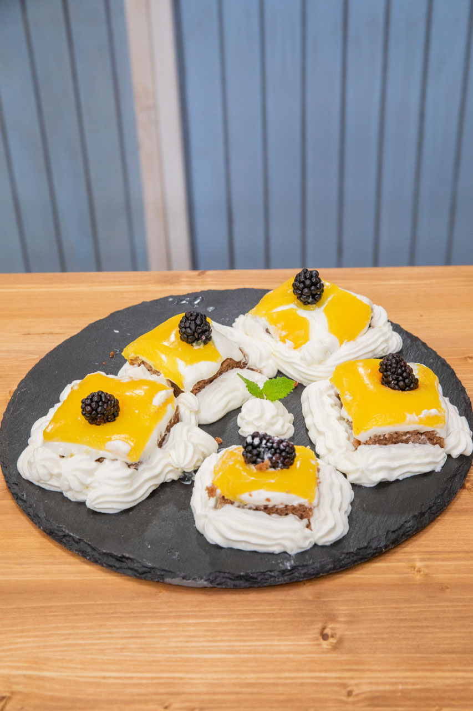
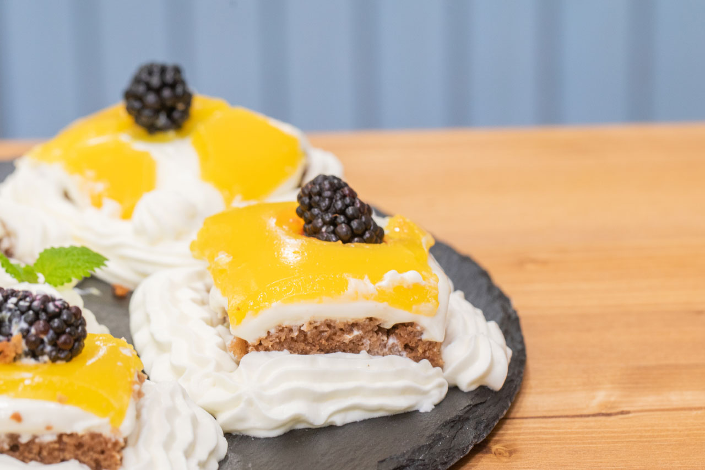

„Řezy ‚den a noc‘! Moje sestra je sice výborná kuchařka, ale pečení je její slabá stránka. Jediné, co umí upéct je tento dezert, tudíž mám recept od ní.“
Řezy
1 hrnek polohrubé mouky
2 hrnky hladké mouky
1,5 hrnku cukru
1 prášek do perníku
1 vanilkový cukr
2 hrnky plnotučného mléka
1 hrnek oleje
3 lžíce rybízové marmelády
2 vejce
1 lžička skořice
3 lžíce hořkého kakaa
Smícháme všechny suché suroviny a postupně přidáváme všechny tekutiny. Krátce vyšleháme a vylijeme na větší plech (aby byl korpus spíše větší, než vysoký), popřípadě po upečení seřízneme.
Náplň
4 plnotučné tvarohy
vanilkový cukr
citronová šťáva
panák rumu
cukr na dochucení
Smícháme tvaroh a ostatní ingredience a potřeme jím vychladlý perníkový korpus.
Poleva
750 ml pomerančového džusu 100%
2 vanilkové pudinky
4 lžíce cukru+ šlehačka, lístky máty, ostružiny (na ozdobu)
Džus s pudinkem uvedeme k varu a provaříme, dokud není poleva tuhá. Polevu musíme lít na korpus horkou, aby nám vznikla hladká, lesklá vrstva. Tvaroh pod ní musí být velmi tuhý.
Řezy dáme vychladnout a potom odekorujeme šlehačkou, lístky máty a ostružinami.
 
